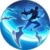

Invisible Armor
For generations, the Invisible Armor has been used as the symbol of the greatest power in House Paxley.
Aamon enters the
Camouflage state each time he hits an enemy with a skill, during which he
cannot be targeted, restores 25
(+15% Total Magic Power) (+Aamon's 3% Lost HP) HP every 0.6 seconds, and gains 60% extra
Movement Speed that rapidly decays over 3.5 seconds.
Upon leaving the Camouflage state, Aamon immediately resets his
Basic Attack's
cooldown and
enhances his Basic Attacks within the next 2.5 seconds. Each enhanced Basic Attack deals 100
(+100% Total Physical Attack) (+65% Total Magic Power) Magic Damage and reduces Aamon's skill
cooldowns by 0.5 second. The first enhanced Basic Attack's damage is increased to
120% if Aamon leaves the Camouflage state actively.
Passive
Soul Shards
Passive: Aamon charges his armor each time he casts a skill or hits an enemy with a skill or
enhanced Basic Attack. At 5 charges, Aamon throws 6 shards at the target on his next attack, each shard dealing 40–100
(+15% Total Magic Power) Magic Damage. The shards will then scatter around the target.
Active: Aamon throws a shard at a nearby enemy, dealing 150–300
(+60% Total Magic Power) Magic Damage.
Skill 1
Slayer Shards
Aamon throws a shard forward, dealing 120-220 (+50% Total Magic Power) Magic Damage to the first non-minion enemy hit and slowing them by 50% for 2 seconds. The shard will then return to Aamon immediately.
If the shard fails to hit an enemy, it will return to Aamon after a short delay and allow him to enter the Camouflage state. |
Skill 2

Endless Shards
Aamon throws all shards at a designated enemy and slows them by 30% for 1.5 seconds. After a short delay, the shards will fly to the enemy's location again, each dealing 90–110 (+24% Total Magic Power)–150–180 (+40% Total Magic Power) Magic Damage.
The number of shards increases with Aamon's armor charges and the shards on the ground (8-25). The damage dealt increases with the target's lost HP, to the maximum when the target's HP is below 30%. The same target takes [10%] less damage from subsequent attacks [to a minimum of 20% damage]. |
Skill 3


{kind=link}